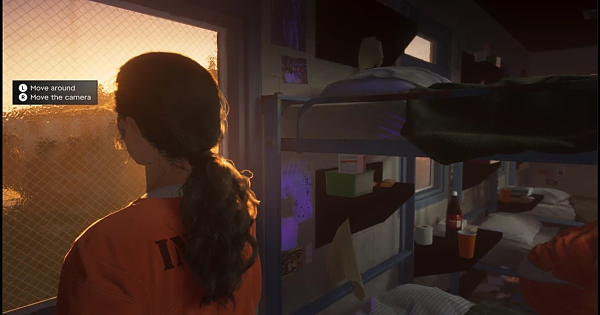

GTA 6's first downloadable PC port is here — ScarlettPort boots Leonida on Windows, no compiling required
Every GTA 6 PC port until now made you build it yourself. ScarlettPort doesn't: it's a public download with its own launcher that boots the Xbox version on Windows, gets past the menus and puts you in control in the opening area — at around 20 frames per second. It's the first one anyone can actually download and run.

Disclosure: this post contains affiliate links. I earn a commission on qualifying purchases.
The GTA 6 PC port race just changed shape. Until today, every project in this saga came with homework: clone the repository, compile the build yourself, hope you got it right. ScarlettPort skips all of that. It is a public release with its own launcher — download the ZIP, run it, and the Xbox version of GTA 6 boots on Windows.
Game Rant, DSOGaming and eTeknix all reported the release on November 27, and the details line up across them. This is the first unofficial port of the game that anyone can simply download.
What ScarlettPort actually is
ScarlettPort is a compatibility layer, not a rebuilt game. It runs the Xbox Series X version of GTA 6 on a PC by translating the game's graphics code for desktop GPUs, and it ships with none of Rockstar's files — you have to supply data from your own copy of the game.
The current build, at version 0.5.3, gets through the legal screens, the menus and the save screens, then reaches the game world and hands you control of your character in the opening area. DSOGaming's breakdown of the 0.5.2 update describes lit rooms, ambient and sky lighting and full textures rendering in that opening stretch — a long way from the single-frame-at-a-time renders this saga started with earlier this week.
It also behaves like a PC game in the small ways. There is experimental mouse-and-keyboard support with mouse look, and the port reads PlayStation controllers — DualSense and DualShock 4 — directly. The launcher shows shader progress live as it builds, leaves two CPU cores free for the desktop, and can install its own updates with one click.
The catch is the frame rate
None of that makes it a good way to play GTA 6 yet. Community testing documented on the project's GitHub page puts a Radeon RX 9060 XT at a median of roughly 19 to 22 frames per second, and eTeknix's reading of open-world tests drops to around 7 frames per second away from the opening area. Game Rant's testing notes an RTX 5070 Ti averaging 12.8 frames per second in the jail sequence. The developers have not verified that the full story can even be completed this way.
So the honest summary is: it boots, it loads, you can walk around the opening — and that is the milestone. A week after launch, the barrier between PC players and Leonida is no longer "can it run at all." It is "can it run well," and that is a much shorter argument.
The warning that comes with every one of these posts
ScarlettPort's executable is not digitally signed, and that matters. Take-Two's November 24 DMCA sweep already erased one port project's entire repository network, and DSOGaming warns that torrent sites are currently full of fake GTA 6 PC downloads. An unsigned program that asks for your copy of the biggest game on Earth is exactly the shape malware hides in, and nothing about this release changes the standing advice: the leaked Xbox files circulating online were distributed without authorization, using them is piracy, and Rockstar has announced no PC version of GTA 6 at all. The game is officially a PlayStation 5 and Xbox Series X|S title. The only official-PC timing in circulation is an unconfirmed report pointing at the first quarter of 2027.
What is verified is the trajectory, and it keeps steepening. In eight days the unofficial port went from leaked files, to a frame every couple of seconds, to rendering in-game, to a mod menu, to multiplayer in a private fork — and now to a public download with a launcher that updates itself. The takedowns are landing on schedule. The releases are landing faster.
Sources: Unofficial GTA 6 PC Port Is Now Live, No Building Required (Game Rant) · First Unofficial GTA 6 PC Port Available for Download (DSOGaming) · First Unofficial GTA VI Port Available for Download on PC (eTeknix)
Watch
Source: Grand Theft Auto VI Launch Trailer (Rockstar Games) — the official launch trailer, released October 15, 2026, 90 seconds of in-game footage captured on PS5, set to Justice's "Flower in a Hurricane."
Gear up: Razer — mice, keyboards, headsets and laptops.